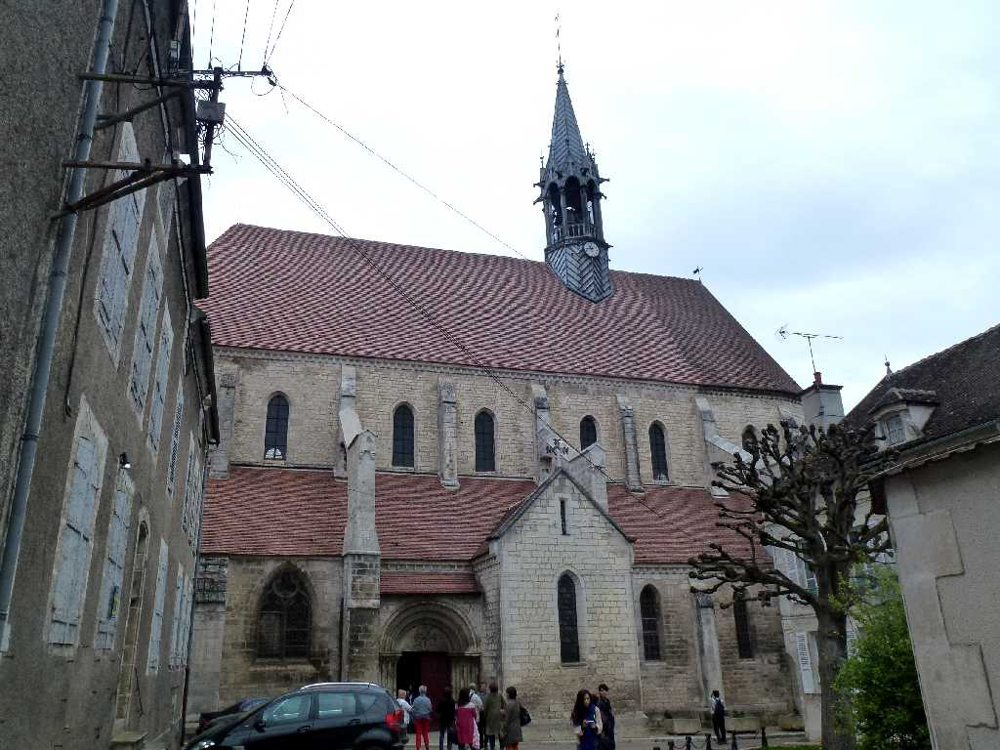
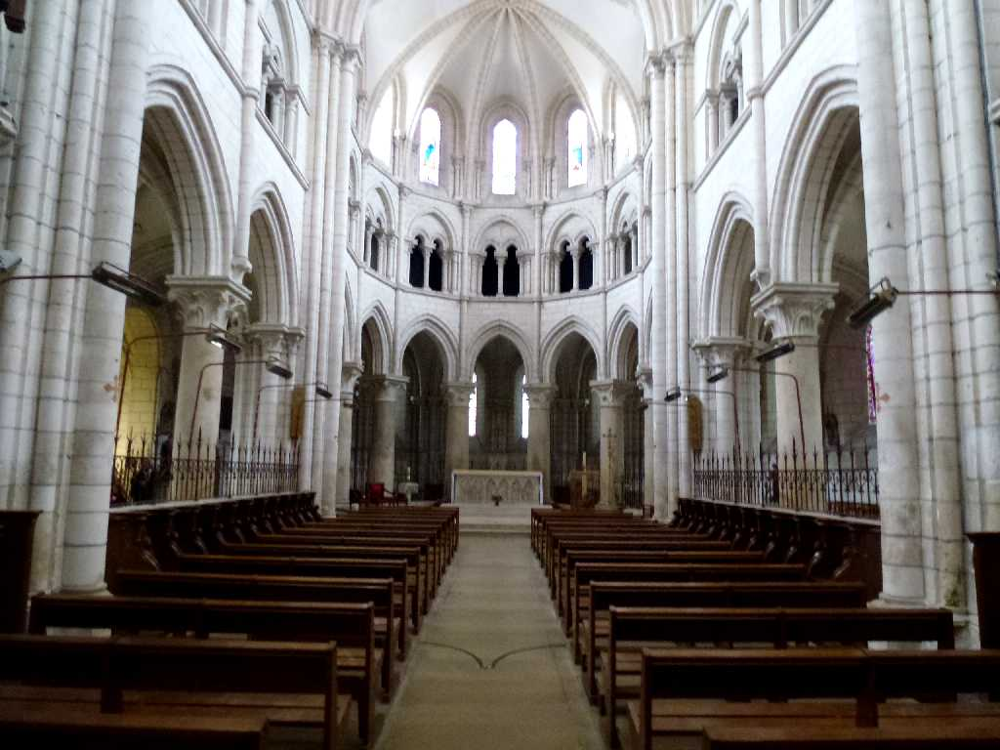
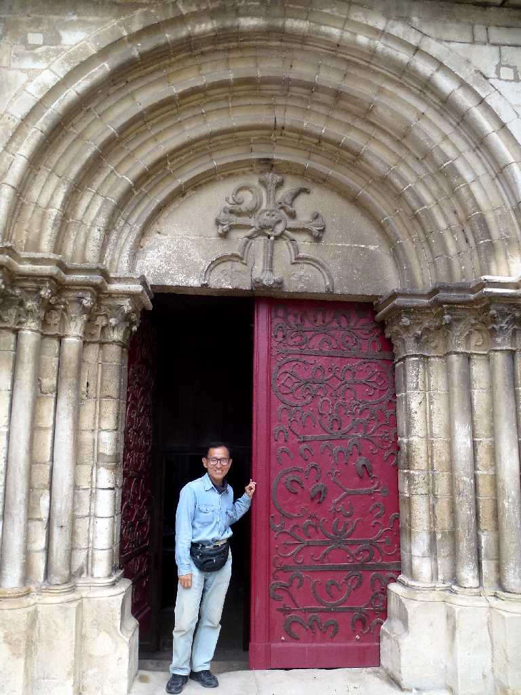
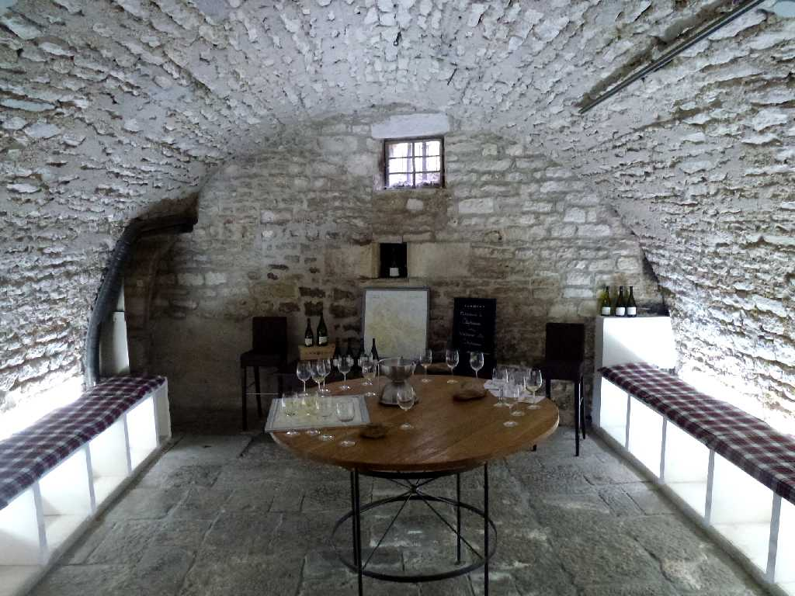
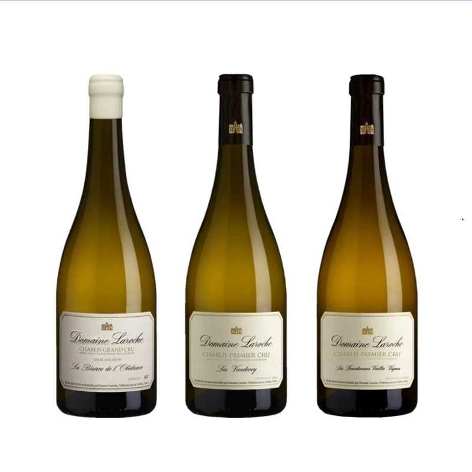
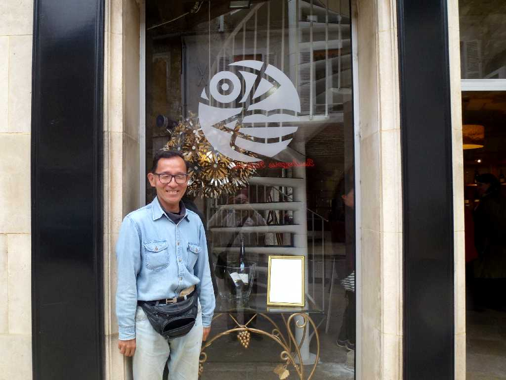

Collégiale Saint Martin de Chablis
１２世紀に創られたゴシック様式のサンマルタン教会

Collégiale Saint Martin de Chablis

April 3 2014 Collégiale Saint Martin de Chablis
Domaine Laroche
サンマルタン修道院の修道士により最初のシャブリワインが創られた

Cellar Domaine Laroche
ラロッシュは１８５０年創業の６０haのブドウ畑を所有するシャブリで最も歴史あるワイナリーで試飲

Wine Domaine Laroche

April 3 2014 Domaine Laroche